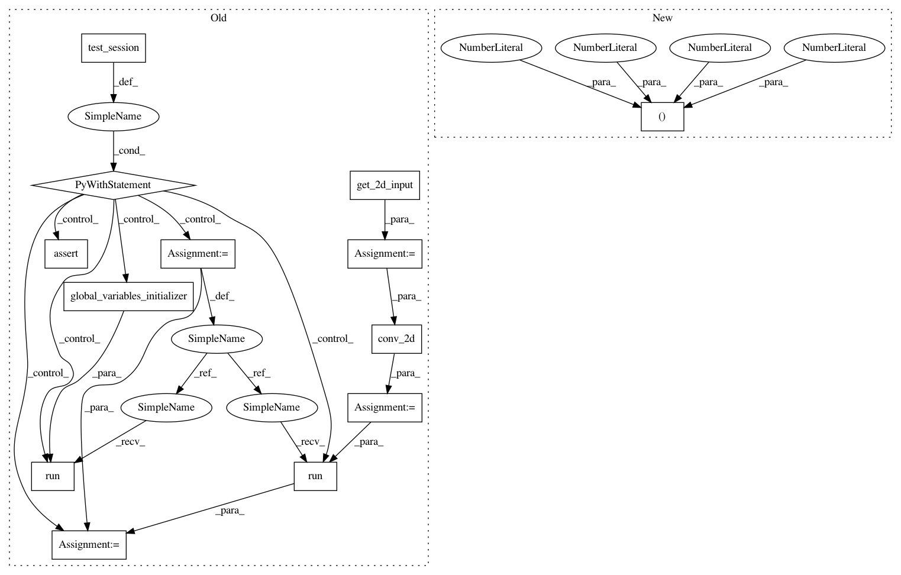

863a9dcee691e850e79d97a16abb977e24324fa1,tests/deconvolution_test.py,DeconvTest,test_2d_deconvlayer_bias_shape,#DeconvTest#,204
Before Change
self.assertAllClose((2, 16, 16, 10), out_2d.shape)
def test_2d_deconvlayer_bias_shape(self):
x_2d = self.get_2d_input()
conv_2d = DeconvolutionalLayer(10, 3, 1, with_bias=True, with_bn=False)
conv_2d_out = conv_2d(x_2d)
print(conv_2d)
with self.test_session() as sess:
sess.run(tf.global_variables_initializer())
out_2d = sess.run(conv_2d_out)
self.assertAllClose((2, 16, 16, 10), out_2d.shape)
def test_deconvlayer_2d_bias_reg_shape(self):
x_2d = self.get_2d_input()
conv_reg = DeconvolutionalLayer(
10, 3, 1,
After Change
"with_bn": False}
self._test_deconv_layer_output_shape(rank=2,
param_dict=input_param,
output_shape=(2, 32, 16, 10),
is_training=True)
self._test_deconv_layer_output_shape(rank=2,
param_dict=input_param,
In pattern: SUPERPATTERN
Frequency: 3
Non-data size: 13
Instances
Project Name: NifTK/NiftyNet
Commit Name: 863a9dcee691e850e79d97a16abb977e24324fa1
Time: 2017-07-17
Author: wenqi.li@ucl.ac.uk
File Name: tests/deconvolution_test.py
Class Name: DeconvTest
Method Name: test_2d_deconvlayer_bias_shape
Project Name: NifTK/NiftyNet
Commit Name: 863a9dcee691e850e79d97a16abb977e24324fa1
Time: 2017-07-17
Author: wenqi.li@ucl.ac.uk
File Name: tests/deconvolution_test.py
Class Name: DeconvTest
Method Name: test_2d_deconvlayer_bias_shape
Project Name: NifTK/NiftyNet
Commit Name: 863a9dcee691e850e79d97a16abb977e24324fa1
Time: 2017-07-17
Author: wenqi.li@ucl.ac.uk
File Name: tests/convolution_test.py
Class Name: ConvTest
Method Name: test_2d_conv_default_shape
Project Name: NifTK/NiftyNet
Commit Name: 863a9dcee691e850e79d97a16abb977e24324fa1
Time: 2017-07-17
Author: wenqi.li@ucl.ac.uk
File Name: tests/deconvolution_test.py
Class Name: DeconvTest
Method Name: test_2d_deconvlayer_default_shape